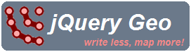
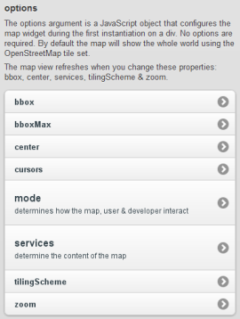
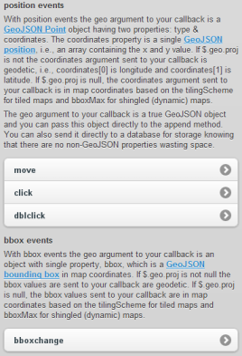
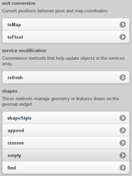
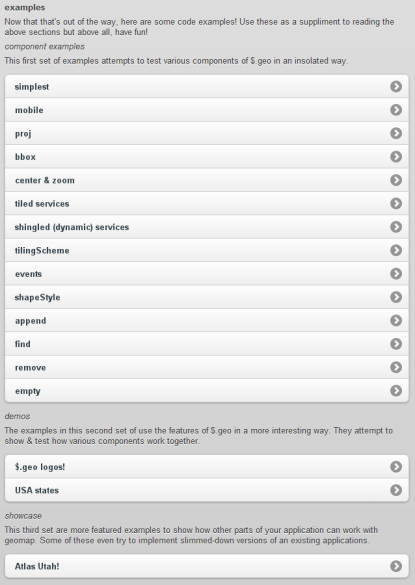
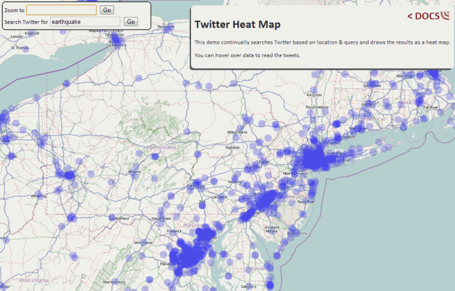

jQuery Geo
O hai!
- Ryan Westphal
- Twitter: @ryanttb
- jQuery Geo: jquerygeo.com
- — API survey
- — Brief jQuery Geo intro
- — Build-a-demo
I am a GIS web developer at Applied Geographics in Boston. I build a lot of mapping websites, which is great!, because more people seem to want them nowadays. However, it can get frustrating.
There are many ways to get maps onto your website. To me, though, it feels like it can get too complex too quickly and require more typing than seems necessary.
Who?


...
I'm sure I forgot a few but you can see that there is no shortage of players.
Reference test
A task to implement in six APIs
I decided to implement the same task in six of the mapping APIs that I just listed. For each, I attempt to follow the best practices as documented by each API on their website.
- add a map to a webpage
- center and zoom to a location
- handle click events
- place the API's default marker/symbol at the clicked location
When I write a new mapping website I need to at least create a map, handle events and show points, which is what this task is doing.
What about?
These are details that all APIs must handle. How they implement them is different. Depending on how they're implemented, they can be sources of code bloat.
- default map
Does the API provide a default map to get you going as fast as possible? How much code do you have to type to show anything?
- literal center
Do you have to wrap simple lon/lat values in objects just to center the map?
- inline event binding
How do you bind to a click event?
- geo event
In your click handler, is the geometry of a clicked point included or do you have to pass pixel values to a function?
- number of "new" per shape
How many extra new objects do you have to create to put a shape on the map?
- amount of extra weirdness
Are there any weird hurdles or extra typing required to get going?
- default map
- literal center
- inline event binding
- geo event
- number of "new" per shape
- amount of extra weirdness
mapquest
MQA.EventUtil.observe(
window, 'load', function() {
var map = new MQA.TileMap(
document.getElementById('map'),
7, { lat: 39.743943, lng: -105.020089 }, 'map'
);
MQA.EventManager.addListener(
map, 'click', function(e) {
map.addShape(
new MQA.Poi(e.ll)
);
}
);
}
);
mapquest's version is very good.
- there is a default map
- location is plain object, set during widget init
- event manager for map events, attach after widget init
- event argument contains map location
- only one "new" to add a shape, MQA.Poi
- no extra weirdness
- default map
- literal center
- inline event binding
- geo event
- number of "new" per shape
- amount of extra weirdness
function init() {
var map = new google.maps.Map(
document.getElementById("map"), {
zoom: 8,
center: new google.maps.LatLng(-34.397, 150.644),
mapTypeId: google.maps.MapTypeId.ROADMAP
}
);
google.maps.event.addListener(
map, 'click', function(e) {
var shape = new google.maps.Marker({
position: e.latLng
});
shape.setMap(map);
}
);
}
Google Maps is the most commonly used API by non-GIS developers.
- there is no longer a default map, can specify google.maps.MapTypeId.ROADMAP during widget init
- location must be wrapped in an object, LatLng, set during widget init
- event manager for map events, attach after widget init
- event argument contains map location
- only one "new" required to add a shape, google.maps.Marker
- must add the map to the shape (as opposed to adding the shape to the map) which might be confusing
- default map
- literal center
- inline event binding
- geo event
- number of "new" per shape
- amount of extra weirdness
bing
function init() {
var map = new VEMap('map');
map.LoadMap(new VELatLong(47.6, -122.33), 10);
map.AttachEvent(
"onclick", function(e) {
map.AddShape(
new VEShape(
VEShapeType.Pushpin,
map.PixelToLatLong(
new VEPixel(e.mapX, e.mapY)
)
)
);
}
);
}
bing isn't too bad either.
- there is a default map
- location must be wrapped in an object, VELatLong, set after widget init
- map widget handles map events, attach after widget init
- event argument does not contain map location, call PixelToLatLong
- two "new's" required to add a shape, VEPixel & VEShape
- no extra weirdness
- default map
- literal center
- inline event binding
- geo event
- number of "new" per shape
- amount of extra weirdness
Ovi
Yahoo! is deprecating their API & points to this.
ovi.mapsapi.util.ApplicationContext.set({ appId: "YOUR APPID", authenticationToken: "YOUR TOKEN" }); var map = new ovi.mapsapi.map.Display( document.getElementById("map"), { components: [ new ovi.mapsapi.map.component.Behavior() ], zoomLevel: 10, center: [52.51, 13.4], eventListener: { click: [ function(e) { map.objects.add( new ovi.mapsapi.map.StandardMarker( map.pixelToGeo(e.displayX, e.displayY) ) ); } ] } } );
Yahoo! is killing their map API in September 2011 and links to Ovi.
- there is a default map
- location is simple array, set during widget init
- map widget handles map events, attach during widget init
- event argument does not contain map location, call pixelToGeo
- only one "new" required to add a shape, ovi.mapsapi.map.StandardMarker
- unlike others, Ovi has not dropped developer keys; also, you have add a "behavior" component to make the map interactive, ovi.mapsapi.map.component.Behavior
- default map
- literal center
- inline event binding
- geo event
- number of "new" per shape
- amount of extra weirdness
Esri
dojo.require("esri.map");
function init() {
var spatialRef = new esri.SpatialReference({ wkid: 4326 });
var map = new esri.Map("map");
map.addLayer(
new esri.layers.ArcGISTiledMapServiceLayer(
"http://server.arcgisonline.com/ArcGIS/rest/services/" +
"World_Street_Map/MapServer"
)
);
map.centerAndZoom(new esri.geometry.Point(-118.15, 33.80, spatialRef), 10);
var markerSymbol = new esri.symbol.SimpleMarkerSymbol();
dojo.connect(
map, "onClick", function (e) {
map.graphics.add(
new esri.Graphic(
new esri.geometry.Point(
e.mapPoint.x, e.mapPoint.y,
spatialRef
)
),
markerSymbol
);
}
);
}
dojo.addOnLoad(init);
Esri is a major player in the GIS world.
- there is no default map, can specify esri.layers.ArcGISTiledMapServiceLayer after widget init
- location must be wrapped in an object, esri.geometry.Point, set after widget init
- dojo for map events, attach after widget init
- event argument contains map location
- two "new's" required to add a shape, esri.geometry.Point & esri.Graphic
- location & shape must have an esri.SpatialReference (I may have just lost some readers); also, you need a symbol object lying around to add a shape, e.g., esri.symbol.SimpleMarkerSymbol
- default map
- literal center
- inline event binding
- geo event
- number of "new" per shape
- amount of extra weirdness
OpenLayers
function init() {
var vectorLayer = new OpenLayers.Layer.Vector("VectorLayer");
var map = new OpenLayers.Map(
'map', {
layers: [
new OpenLayers.Layer.WMS(
"OpenLayers WMS",
"http://vmap0.tiles.osgeo.org/wms/vmap0", {
layers: 'basic'
}
),
vectorLayer
]
}
);
map.setCenter(new OpenLayers.LonLat(-71.147, 42.472), 12);
OpenLayers.Control.Click = OpenLayers.Class(OpenLayers.Control, {
initialize: function(options) {
OpenLayers.Control.prototype.initialize.apply(
this, arguments
);
this.handler = new OpenLayers.Handler.Click(this, {
click: function(e) {
var lonlat = map.getLonLatFromViewPortPx(e.xy);
vectorLayer.addFeatures([
new OpenLayers.Feature.Vector(
new OpenLayers.Geometry.Point(lonLat.lon, lonLat.lat)
)
]);
}
});
}
});
map.addControl(new OpenLayers.Control.Click());
}
OpenLayers is the only GIS-centric open source API that you may have used.
- there is no default map, can specify OpenLayers.Layer.WMS during widget init
- location must be wrapped in an object, OpenLayers.LonLat, set after widget init
- event system used to create a click control, e.g., OpenLayers.Control.Click, to add to the map, attach after widget init
- event argument does not contain map location, call (interestingly named) getLonLatFromViewPortPx
- two "new's" required to add a shape, OpenLayers.Geometry.Point & OpenLayers.Feature.Vector
- you need an extra layer just for shapes; also, the event system for click handling
Paradigm
- 
Write less, map more!
The jQuery paradigm is: write less, do more. We implement this with mapping, so, jQuery Geo's paradigm is: write less, map more.
- default map
- literal center
- inline event binding
- geo event
- number of "new" per shape
- amount of extra weirdness
jQuery Geo
$(function() {
var map = $("#map").geomap({
center: [ -71.147, 42.472 ],
zoom: 10,
click: function(e, geo) {
map.geomap("append", geo);
}
});
});
- 100% custom JavaScript, not wrapping any 3rd-party controls
- OpenStreetMap by default
- location is a GeoJSON position, set during widget init
- jQuery for map events, attach during widget init
- event argument contains map location, a GeoJSON point
- zero "new's" required to add a shape
- no extra weirdness
Shape interaction
$(function() {
var map = $("#map").geomap({
center: [ -71.147, 42.472 ],
zoom: 10,
click: function(e, geo) {
var existing = map.geomap("find", geo, 3);
if (existing.length > 0) {
map.geomap("remove", existing[0]);
} else {
map.geomap("append", geo);
}
}
});
});
We've just seen how to add points but we also need to interact with them.
In jQuery Geo, you do this with the map widget & other plugin functions.
Shapes don't trigger their own events. You use the find method to perform a spatial query.
The code above adds or removes a shape depending on weither or not one already exists at the click location.
GIS FTW
$("#map").geomap({
services: [ {
id: "NewJersey",
type: "tiled",
getUrl: function (view) {
return "http://njgin.state.nj.us/ArcGIS/rest/services/basemap_v4/MapServer/tile/" + view.zoom + "/" + view.tile.row + "/" + view.tile.column;
}
} ],
tilingScheme: {
tileWidth: 512,
tileHeight: 512,
pixelSizes: [
3472.22222222222,
2604.16666666667,
2170.13888888889,
1562.5,
976.5625,
494.791666666667,
260.416666666667,
130.208333333333,
65.1041666666667,
32.5520833333333,
21.7013888888889,
10.8506944444444,
5.20833333333333,
2.08333333333333,
1.04166666666667
],
origin: [-842000, 1440000]
},
center: [458240.213369, 458773.907696],
zoom: 2
});
So far jQuery Geo looks a lot like the other non-GIS APIs. However, there is full support for any mapping server and custom tiling schemes.
Once you step outside the world of web mercator, you may need an object like this in the worst case but the rest of jQuery Geo works the same.
Even while making the simple examples I showed above, I got lost in some API docs.
For example, handling click events in OpenLayers. The website says the demos are "the primary source of documentation." After looking through six demos, the best practices appear to be building a click handler control.
With jQuery Geo, the documentation comes first.
Lots-o-docs!
  Every function & property in jQuery Geo is well documented and has a focused example page before I make the feature public.
Anything not in the docs is either not supported yet or not supported by design.
You should only dive into the project source code because you want to, never because you have to.
Examples, demos and the showcase
Apart from the focused examples, demos tie different parts of the plugin together and mix in other libraries.
The Showcase has more complete apps inspired by sites done in other mapping APIs. These help me test how jQuery Geo works in the real world.
Demo
Let's make a demo!
This will be a trimmed version of the Twitter heatmap demo already on jquerygeo.com.
zoom to geolocation
You've already seen a simple example of zooming to a specific location so this demo starts out from the more interesting point: zooming to your current location. Here we use HTML5's geolocation API to ask a user where they are and initialize the map's center appropriately.
add a location search
In case geolocation isn't allowed, is off, or fails, we can give the user location search power by using mapquest's open API to query Open Street Map data. Their response time is slightly faster than actually using OSM's server. The result is not true GeoJSON but we can quickly reorder the bbox array before setting geomap's extent.
add a twitter search
We can make a call to Twitter's Search API sending it a string to query, the map's center, and a radius in kilometers. Since the default projection (Web Mercator) is in meters, we can calculate the radius by multiplying the pixel size (the number of meters/pixel) by half the page's width (in pixels). The result is meters which we divide by 1000 for kilometers. Twiter's Search API returns an error if the radius is greater than 2500 km so we have to limit it.
For each result, we check for a geo property and append the shape to the map. The geo result from Twitter is almost a GeoJSON point but the longitude and latitude are reversed.
While initializing the map, we set the style to a larger translucent circle without a border to make it look more like a heat map.
show tweets in popup
This time, we've added some HTML for a hover popup. The HTML is inside the map div so it doesn't interfere with user interaction.
Toward the bottom, we add a true GeoJSON Feature to the map instead of just the shape. You can attach extra arbitrary properties to Features. In this case, we add the user and tweet text as HTML.
Lastly, we hook into the move event to track when a user moves the mouse over the map. We can search for shapes under the map cursor using the find method. If any are found, we add them to the popup and show it.
Round trip
Questions?
- Ryan Westphal
- Twitter: @ryanttb
Thank you!
- jQuery Geo: jquerygeo.com
- presentation: http://trippingthebits.com/geopres/
- github project: http://github.com/AppGeo/geo
- Applied Geographics: http://appgeo.com
Comments
blog comments powered by Disqus